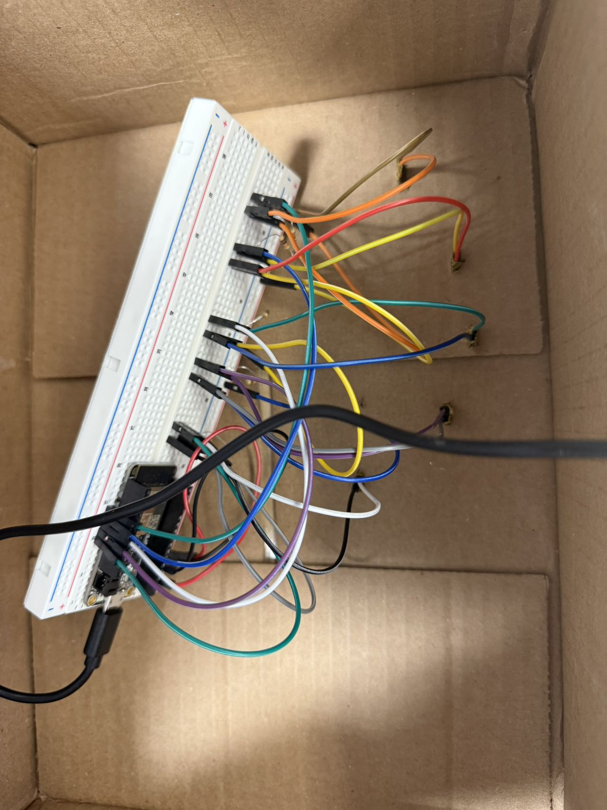

Here is the full video in Youtube https://youtu.be/cji1caUrh-A
1. I used the 'myDrumMachine' framework from the W13 class to visualize it, and I also want to apply some effects we learned before, such as balls' linear movement. So, I added 'numBalls' and its related attributes, using ballToDrums to let a drum trigger a group of balls.
2. But I soon found one question, as I pressed drums, balls had a quite short change in color and size, that's why I added 'ballDecayTimers' to alter this situation.
3. After all things were finished, it's time to combine it with Arduino.
4.Then, I used tinkercard to clarify my thinking, making sure the resistance.
5. In this process, I forgot to add'Serial.print(',')' between 'Serial.print(digitalRead())', and I used one more 'Serial.println('.')', which made troubles later.
6. Afterwards, I added some necessary parts based on code constructed before.
7. Test it.
8. Based on the gripping posture, mount the installation onto the cardboard box and continue testing.
9. Upgrading visual performance.